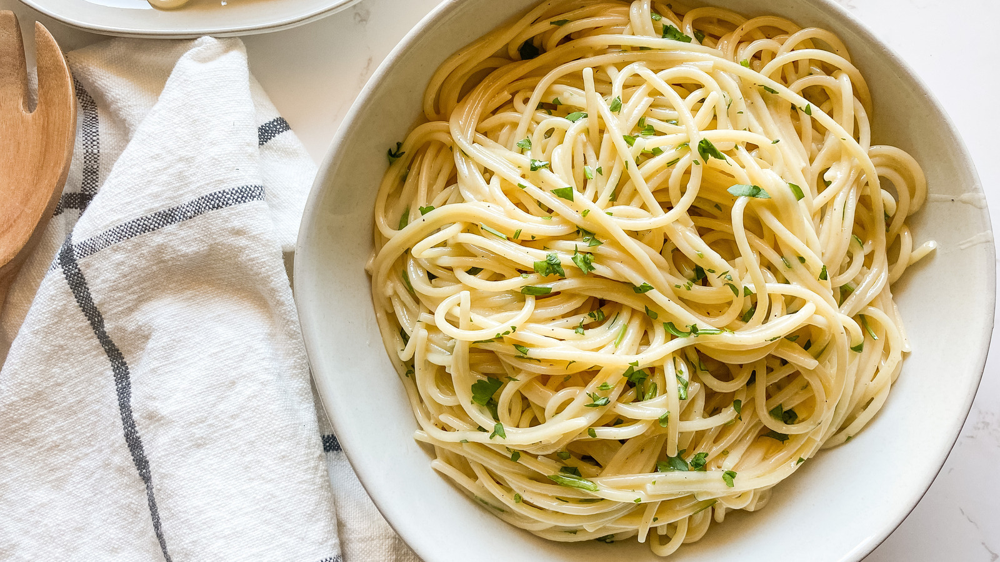

Home
Creamy Garlic Pasta

Short on time? This super-fast pasta dish is restaurant quality without leaving home.
It’s a really easy recipe that’s budget-friendly for any night of the week.
The possibilities are endless. Add cooked or leftover veggies like asparagus, green peas or broccoli. Stir in shredded chicken, smoked sausage, or other leftover proteins.
Ingredients
- 2 teaspoons olive oil
- 4 garlic cloves, minced
- 2 tablespoons butter
- 3 cups chicken broth, or more as needed
- ½ teaspoon ground black pepper
- ¼ teaspoon salt
- ½ pound spaghetti
- 1 cup grated Parmesan cheese
- ¾ cup heavy cream
- 1 ½ tablespoons dried parsley
Steps:
- Heat olive oil in a medium pan over medium heat. Add garlic and stir until fragrant, 1 to 2 minutes. Add butter and stir constantly until melted. Pour in 3 cups chicken broth; add pepper and salt. Bring to a boil.
- Add spaghetti and cook, stirring occasionally, until tender yet firm to the bite, about 12 minutes. Add more chicken broth if pasta starts to stick to the pan.
- Add Parmesan cheese, cream, and parsley and mix until thoroughly combined. Serve immediately.
Back to top